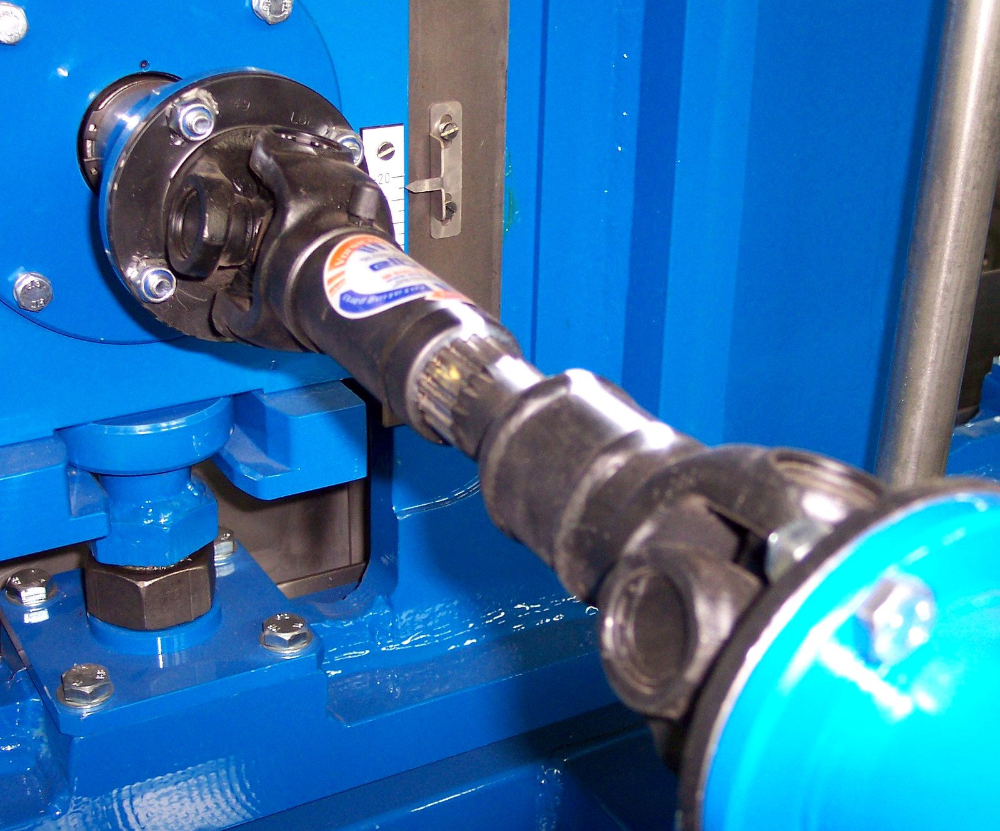
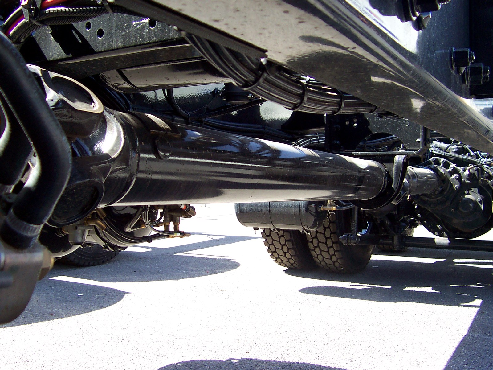
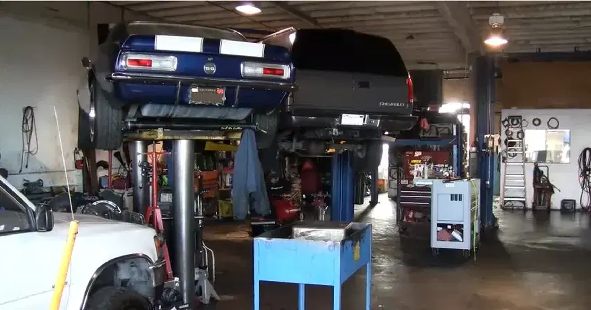

Your driveshaft
doesn't fail fast.
It fails on a schedule.
A shaft that is out of balance by a few thousandths wears the U-joints, then the yoke, then the tail housing. By the time you feel it, it has been building for a year. We measure it, we true it, and we put it back in spec. In house, on Sunset Drive.
Four things fail.
We do all four.
Most shops send driveline work out. We do not. Every part between the flex plate and the wheel bearing is rebuilt at 1105 Sunset Drive.
YOKE
Transmission & transfer case
Automatic and manual, foreign and domestic. Electrical diagnosis when the problem is a solenoid or a wire and not the gears. Band adjustments. Fluid exchange.
SHAFT
The tube itself
Lengthening and shortening for conversions, engine swaps and custom builds. Cut, welded and trued on a lathe, not swapped for a guess.
U-JOINT
U-joints & CV axles
The joint takes the angle, so it takes the wear. Sealed or greasable, pressed and indexed correctly so the shaft stays phased.
BALANCE
Balancing
A shaft is a tuned spring. Get the balance wrong and you feel it at one specific speed, every time. We spin it and correct it until that speed is quiet.
FLEX
Flex plate & flywheel
Cracks start at the bolt circle and travel. A cracked flex plate sounds exactly like a failing transmission, and it is a fraction of the cost to fix.
AXLE
Differentials & bearings
Front and rear differential service, chassis lube, wheel bearing re-packing. The parts that quietly decide how long the rest of it lasts.
Spin it until
it goes quiet.
A drive shaft is not a pipe. It is a tuned assembly, and balance is the whole game. Bring it to us the way it is, bent, dented, cut short, or vibrating at 55 and smooth at 70, and we will tell you what it is doing and what it costs to make it stop.
- Lengthening
- Conversions & swaps
- Shortening
- Cut, welded, trued
- U-joints
- Pressed & phased
- Balancing
- Spin, measure, correct
- Inspection
- Free · 27 points
The whole list,
not the short one.
Our technicians have the best training in the industry, and experience with both new and classic transmission work. Ask about warranties before you leave.
Transmission
- Transmission service
- Repair and replacement
- Automatic transmission repair
- Manual transmission repair
- Electrical transmission diagnosis
- Non-electric transmission diagnosis
- Manual clutch service and repair
- Band adjustments
- Transmission fluid exchange
- Free transmission diagnosis
Driveline & axle
- Complete drive shaft service
- Drive shaft lengthening
- Drive shaft shortening
- Drive shaft re-tubing
- U-joints
- Drive shaft balancing
- Rebuild or replace CV axles
- Transfer cases
- Front and rear differential service
- Automatic flex plate replacement
- Automatic flywheel replacement
- Chassis lube replacement
- Re-packing of wheel bearings
- Free 27-point vehicle inspection


Component photography: "Cardan Shaft" and "Universal joints shaft" via Wikimedia Commons, CC BY-SA 3.0. Shown for illustration. These are not photographs of this shop's work.
A long time
on one street.
The shop has been servicing, repairing, replacing and rebuilding transmissions on Sunset Drive in Antioch since 1958. Long enough that we have fixed cars belonging to the grandchildren of our first customers.
Chet has been in the automotive industry for over 26 years, and spent 15 of them mastering the repair and rebuild of automatic and standard transmissions before taking over the shop. When you call, you are talking to a shop that is run by the person doing the work.
Independently rated on customer surveys rather than on advertising. Independently owned and operated, which is why the prices stay where they are and the answer stays straight.
Automotive Service Excellence certification on staff, and the state-of-the-art diagnostic computer equipment to go with it. The right diagnosis the first time.

Bring it in.
We'll tell you straight.
Hours
- Monday7:00 am – 5:30 pm
- Tuesday7:00 am – 5:30 pm
- Wednesday7:00 am – 5:30 pm
- Thursday7:00 am – 5:30 pm
- FridayClosed
- SaturdayClosed
- SundayClosed
If you need to drop the vehicle outside business hours, print our Early Bird and Night Owl drop-off form and leave it with the keys. Your vehicle is in the yard on Sunset Drive, not on a street.
Free transmission diagnosis. Free 27-point inspection. Cash and card accepted, no checks. Foreign and domestic, new and classic.
1105 Sunset Dr, Antioch, CA 94509
(925) 754-1870
Request an estimate
Tell us what it's doing. If it is a shaft, tell us the speed where it vibrates. That single number narrows it down faster than anything else.